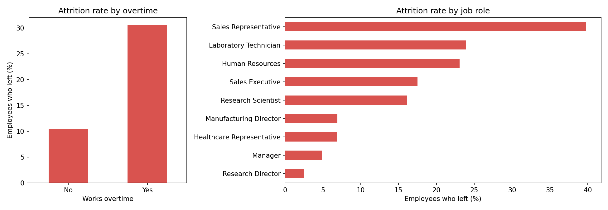
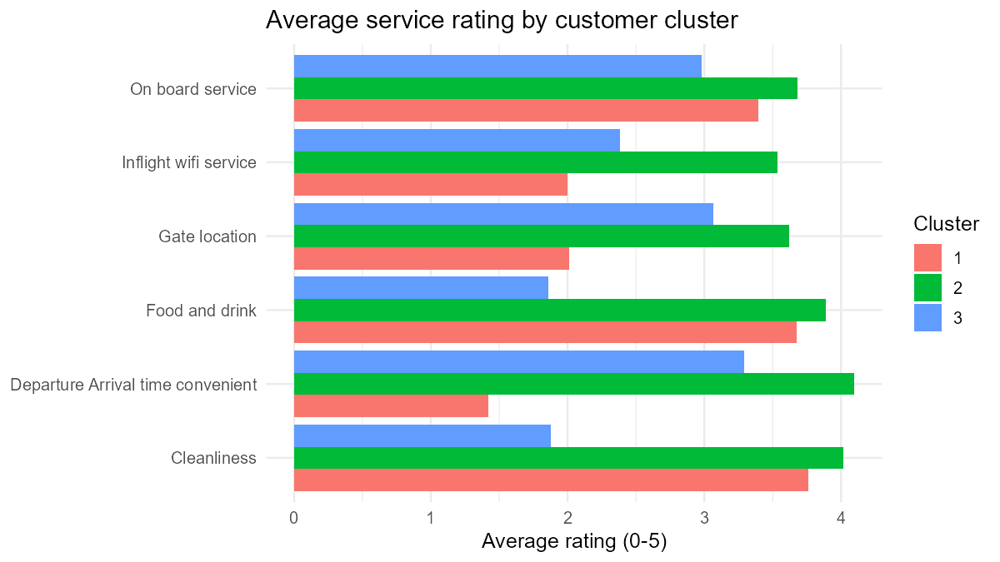
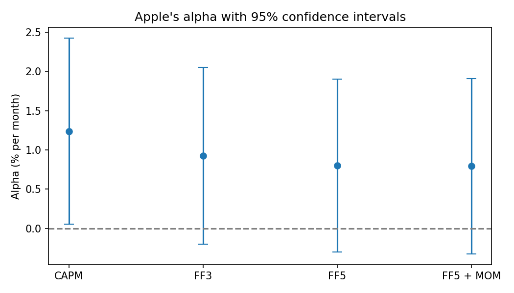
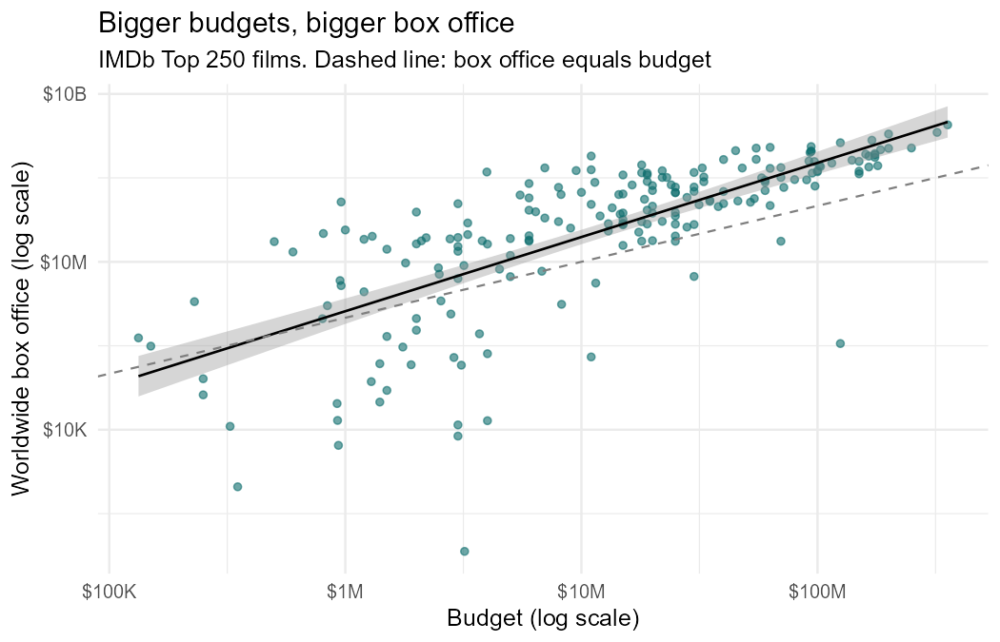
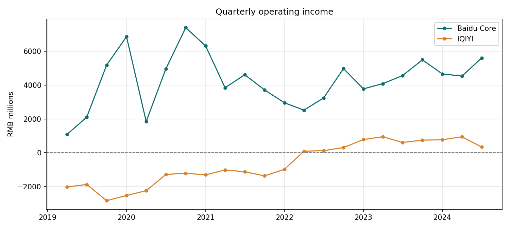
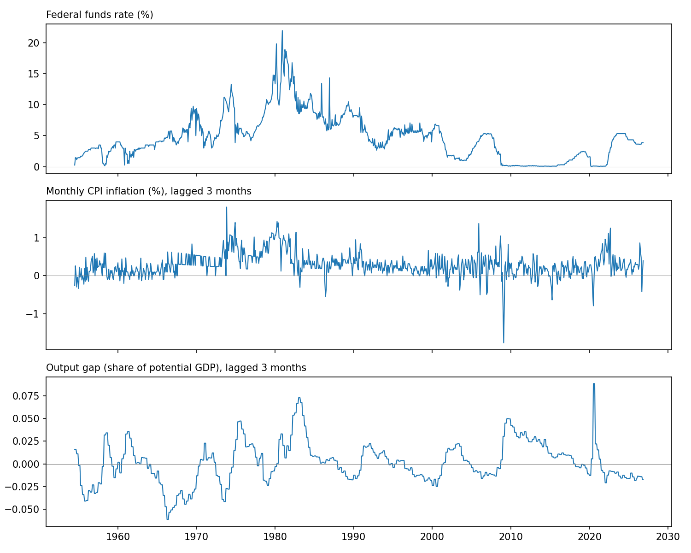

I turn messy data into reports people can act on.
I'm Megan (Yi-Feng) Hung, a Master of Business Analytics student at the Schulich School of Business in Toronto. I work in Python, SQL and R, and I care about analysis that ends in a clear recommendation.
Selected work
Projects

Employee Attrition
Naive Bayes and SVM classifiers that flag employees likely to leave, with the decision cut-off tuned on training data only.
Overtime triples the chance of leaving
SUM(paid) OVER (
PARTITION BY customer
ORDER BY week)Customer360 in SQL
One PostgreSQL query that turns a star schema into a weekly history of every customer: first order, weekly spend and running revenue.
Eight CTEs, no double-counted revenue

R Data Analytics Series
Six business questions, six methods: customer segments, decision trees, k-means, PCA, review sentiment and an A/B test.
90% accuracy on 31,000 held-out passengers

Financial Econometrics
CAPM and Fama-French factor models for Apple, plus Monte Carlo checks that confidence intervals behave as promised.
Apple's alpha disappears once profitability is priced in

IMDb Top 250 Box Office Team
Hypothesis tests, multiple regression and ridge regression on what goes with a high box office.
Budget explains box office; ratings do not
ROW_NUMBER() OVER (
PARTITION BY month
ORDER BY sold DESC)Bakery Sales Analysis in SQL
Five questions on a point-of-sale table: best sellers by month, large baskets, peak hours and whether the data can be trusted.
Ranking, time windows and data-quality checks

Baidu Segment Financials Team
Five years of quarterly revenue, cost and operating income for Baidu Core and iQIYI, compared in four charts.
iQIYI turned profitable by cutting costs, not by growing
open data + survey
↓ join
interactive mapPublic Restroom Map Team
Government open data and crowdsourced survey ratings merged into one interactive map of public restrooms around campus.
Markers coloured by a 0–100 condition score

FRED Macro Dataset
A reproducible pipeline that builds a monthly dataset of US inflation, interest rates and the output gap from public data.
867 months of data, no API key needed
Solver → maximise profit
bundle = 39 scones
+ 5 biscottiCoffee Shop Sales Analysis Team
An order database with forms, queries and reports, plus Excel models that find the most profitable product bundle.
About $67 profit per optimised bundle
Toolkit
What I work with
Python
pandas, scikit-learn, statsmodels, matplotlib, folium. Classification, regression, simulation, data pipelines.
SQL
PostgreSQL. Common table expressions, window functions, star schemas, data-quality checks.
R
tidyverse, ggplot2, rpart, glmnet. Clustering, PCA, text mining, hypothesis and A/B testing.
Excel, Access & Tableau
Pivot tables, Solver, scenario analysis, relational databases, dashboards.
Background
Experience
Data Analysis Intern, Index Asia
Mar 2025 – Mar 2026
- Cleaned and processed more than 90,000 consumer feedback records in Excel.
- Ran share-of-voice and sentiment analysis to evaluate word-of-mouth strategies.
- Wrote consumer-insight reports for automotive, beauty and banking brands.
Project Management Intern, Sunnet
Jul 2024 – Aug 2024
- Gathered and analyzed requirements with internal teams and translated business needs into system design documentation.
- Coordinated with developers and designers on interface and user-flow improvements.
- Managed timelines and facilitated stakeholder status meetings.
HR Coordinator, NCCU Data Analytics Club
Jun 2023 – Jun 2024
- Ran recruitment and tracked member attendance and engagement.
Learning
Education
Master of Business Analytics
Schulich School of Business, York University · May 2026 – Apr 2027
B.B.A. in International Business
National Chengchi University, Taiwan · 2021 – 2025
Exchange semester
SKEMA Business School, France · Fall 2024
Certificates
- Supervised Learning with scikit-learn DataCamp · 2026
- Unsupervised Learning in Python DataCamp · 2026
- Machine Learning with Tree-Based Models DataCamp · 2026
- Intermediate SQL DataCamp · 2026